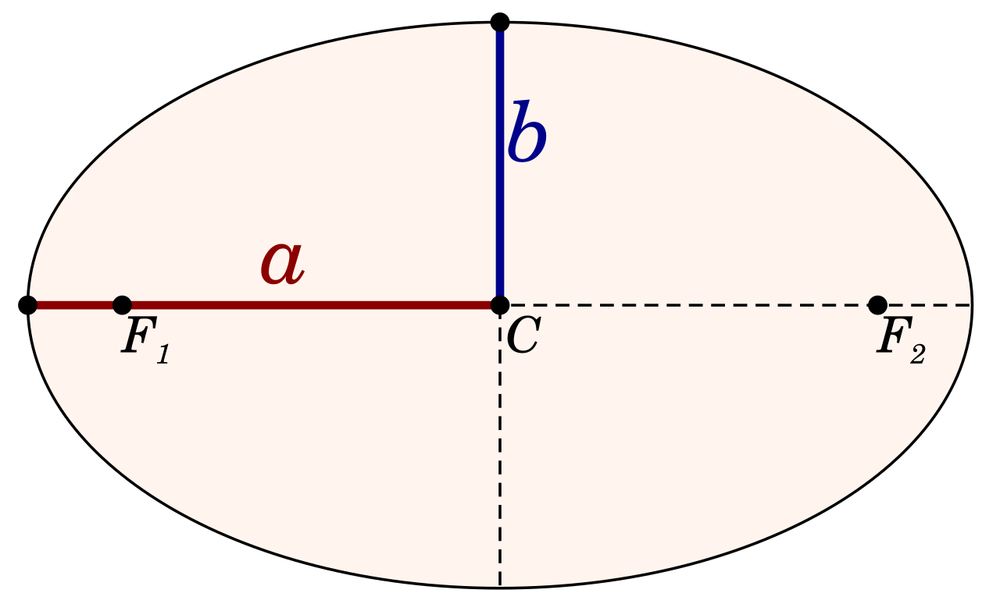

The major axis is the longest diameter of an ellipse — a straight line segment passing through the centre and both foci, with its endpoints on the ellipse. Half this length is the semi-major axis (symbol a), one of the most important quantities in orbital mechanics. Because every bounded gravitational orbit is an ellipse (Kepler's First Law), the major axis and semi-major axis underpin descriptions of all orbital motion: planetary orbits, binary star systems, satellite paths, and the shapes of elliptical galaxies.

M. W. Toews; Wikimedia Commons (CC0)
{kind=link}
Geometry of an Ellipse
An ellipse centred at the origin is described by the equation (x/a)2 + (y/b)2 = 1, where a is the semi-major axis and b is the semi-minor axis perpendicular to it. The two foci lie on the major axis at a distance c from the centre, where c2 = a2 − b2. The eccentricity e = c/a = √(1 − b2/a2) measures departure from circularity: e = 0 yields a circle, 0 < e < 1 an ellipse, e = 1 a parabola, and e > 1 a hyperbola. Earth's orbital eccentricity is 0.0167, making its orbit very nearly circular.
Apsides: The Endpoints of the Major Axis
The endpoints of the major axis are the apsides — the closest and farthest points in an orbit. For a planet orbiting the Sun, these are the perihelion (closest approach) and aphelion (greatest distance), at distances rmin = a(1 − e) and rmax = a(1 + e) respectively. The semi-major axis is therefore the arithmetic mean of the perihelion and aphelion distances: a = (rmin + rmax) / 2. Equivalent terminology applies in other systems: perigee and apogee for Earth-orbiting bodies, periastron and apastron for binary star orbits, and periapsis and apoapsis in general usage.
Kepler's Laws and the Semi-Major Axis
Kepler's First Law (published in Astronomia Nova, 1609) states that every planet orbits the Sun in an ellipse with the Sun at one focus; the major axis therefore connects the two extreme points of the orbit while the Sun is offset from the centre by the focal distance c. Kepler's Third Law (published in Harmonice Mundi, 1619) states that the square of the orbital period is proportional to the cube of the semi-major axis: T2 ∝ a3. For solar orbits with period T measured in years and a in astronomical units, this simplifies to T = a3/2. Newton (1687) generalised the law as T2 = 4π2a3 / [G(M + m)], incorporating both masses and the gravitational constant. All ellipses with the same semi-major axis share the same orbital period regardless of eccentricity; the semi-major axis is therefore often equated with the mean orbital distance from the primary body.
Binary Star Orbits
In a binary star system, both stars orbit their common centre of mass in ellipses. The major axis of each star's relative orbit — called the line of apsides — passes through the primary (at a focus) and connects the points of closest and most distant separation (periastron and apastron). In visual binaries, the angular semi-major axis is measured in arcseconds; the physical semi-major axis in astronomical units is recovered as aAU = aarcsec × D, where D is the system distance in parsecs. Combined with the orbital period, Kepler's Third Law then yields the total system mass.
Elliptical Galaxy Morphology
The major axis is also the primary measurement axis used to classify elliptical galaxies. The Hubble morphological sequence assigns an ellipticity parameter En = 10(1 − b/a), where a is the observed major axis and b is the minor axis; values run from E0 (circular in projection) to E7 (most elongated, b/a ≈ 0.3). Galaxy isophote fitting uses ellipse approximations in which the major axis orientation (position angle) and axis ratio b/a are standard morphological descriptors.